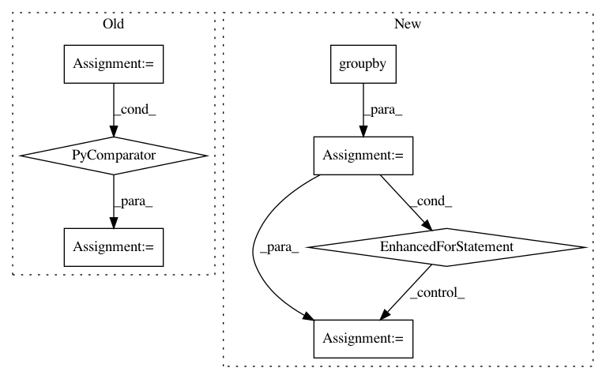

b127d30a0a0a3d3d7ad94dd629d2e673b6477cc8,scipy/spatial/_spherical_voronoi.py,SphericalVoronoi,_calc_vertices_regions,#SphericalVoronoi#,264
Before Change
)
// calculate regions from triangulation
self.regions = [[k for k in range(0, len(self._tri.simplices))
if n in self._tri.simplices[k]]
for n in range(0, len(self.points))]
def sort_vertices_of_regions(self):
For each region in regions, it sorts the indices of the Voronoi
After Change
//group by generator indices to produce
//unsorted regions in nested list
groups = []
for k, g in itertools.groupby(list_tuples_associations,
lambda t : t[0]):
groups.append([element[1] for element in list(g)])
self.regions = groups
def sort_vertices_of_regions(self):
In pattern: SUPERPATTERN
Frequency: 3
Non-data size: 7
Instances
Project Name: scipy/scipy
Commit Name: b127d30a0a0a3d3d7ad94dd629d2e673b6477cc8
Time: 2016-02-16
Author: tyler.je.reddy@gmail.com
File Name: scipy/spatial/_spherical_voronoi.py
Class Name: SphericalVoronoi
Method Name: _calc_vertices_regions
Project Name: has2k1/plotnine
Commit Name: a7024416e4ff05722bc2bcee0c2771933899dfe3
Time: 2014-03-30
Author: has2k1@gmail.com
File Name: ggplot/geoms/geom_area.py
Class Name: geom_area
Method Name: plot_layer
Project Name: daavoo/pyntcloud
Commit Name: b6106d3044f7800af8710cbdc998ed78f7e6588c
Time: 2016-11-30
Author: daviddelaiglesiacastro@gmail.com
File Name: pyntcloud/structures/octree.py
Class Name: Octree
Method Name: get_level_as_sf